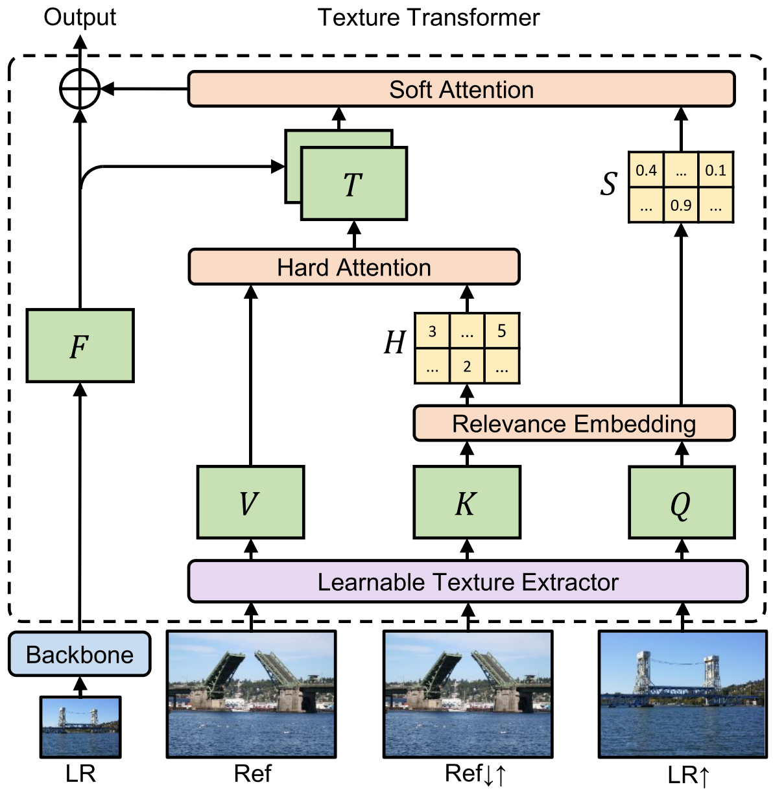
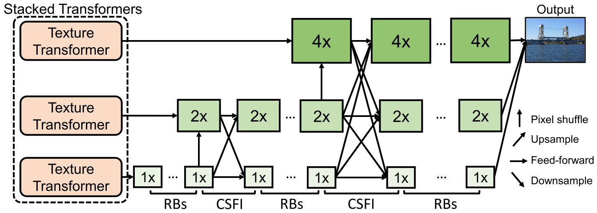

Learning Texture Transformer Network for Image Super-Resolution¶
Image super-resolution (SR) is the task of recovering realistic textures from a low-resolution (LR) image. Recent progress has been made by taking high-resolution images as references (Ref), so that relevant textures can be transferred to LR images.
Existing SR approaches neglect to use attention mechanisms to transfer high-resolution (HR) textures from Ref images. In this work, the authors propose a novel Texture Transformer Network for Image Super Resolution (TTSR). It consists of four closely-related modules optimized for image generation tasks:
a learnable texture extractor
a relevance embedding module
a hard-attention module and a soft-attention module
Experiments show that TTSR achieves significant improvements over SOTA approaches.
Texture Transformer¶
LR, LR \(\uparrow\), and Ref represent the input image, the 4x bicubic-upsampled input image, and the reference image. We obtain Ref \(\downarrow\uparrow\) by downsampling and then upsampling the reference image, which is dominant-consistent with LR \(\uparrow\). The architecture overview is shown below.
{kind=link}
Learnable Texture Extractor. The authors use a learnable texture extractor to encourage a joint feature learning across teh LR and Ref image.
Relevance Embedding. Relevance embedding aims to embed the relevance between the LR and Ref iamge by estimating the similarity between \(Q\) and \(K\). The authors first unfold \(Q\) and \(K\) into patches
Then the relevance \(r_{i, j}\) is estimated by the normalized inner product:
Hard Attention. The hard-attention module transfer teh HR texture features \(V\) from the Ref image. To avoid blurry results, only features from the most relevant position in \(V\) are transferred. The hard-attention map \(H\) is calculated by:
The transferred HR texture features \(T\) is simply selected from the \(h_i\) position in \(V\).
Soft Attention. The soft-attention module synthesize features from the transferred HR texture features \(T\) and the LR features \(F\). The soft-attention map \(S\) is computed by:
The fusion operation is represented as:
Cross-Scale Feature Integration¶
The texture transformer can be further stacked in a cross-scale way with a cross-scale feature integration module (CSFI).
Stacked texture transformers output the synthesized features for three resolution scales (1x, 2x, and 4x). A CSFI module is applied each time the LR feature is up-sampled to the next scale.
{kind=link}
Loss Function¶
The loss function is the sum of the reconstruction loss, the adversarial loss, and the perceptual loss:
The reconstruction loss is the L1 loss which is sharper for performance and easier for convergence:
The adversarial loss is introduced and the authors adopt WGAN-GP [1] which proposes a penalization of gradient norm to replace weight clipping, resulting in more stable training and better performance:
The perceptual loss is used to improve visual quality. The key idea is to enhance the similarity in feature space between the prediction image and the target image.
References¶
[1] Gulrajani, I., Ahmed, F., Arjovsky, M., Dumoulin, V., & Courville, A. C. (2017). Improved training of wasserstein gans. In Advances in neural information processing systems (pp. 5767-5777).